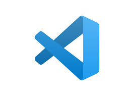
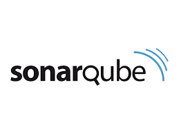

Visual Studio
Un entorno de desarrollo integrado (IDE) ligero y flexible que admite múltiples lenguajes de programación y ofrece una amplia variedad de extensiones para personalizar y mejorar la experiencia de desarrollo.
Link de la paginaGitHub

Un sistema de control de versiones distribuido que permite gestionar y rastrear cambios en el código fuente de un proyecto, facilitando la colaboración y el trabajo en equipo.
Link de la paginaJenkins

Una herramienta de integración continua y entrega continua (CI/CD) que automatiza la construcción, prueba y despliegue de aplicaciones, mejorando la eficiencia y la calidad del desarrollo de software.
Link de la paginaJira

Una plataforma de gestión de proyectos que ofrece herramientas para planificar, rastrear y gestionar proyectos de software, facilitando la colaboración y la toma de decisiones informadas.
Link de la paginaPostman

Una herramienta para probar y depurar APIs que permite enviar solicitudes HTTP y analizar respuestas, facilitando el desarrollo y la depuración de servicios web.
Link de la paginaSelenium

Un marco de prueba automatizado para aplicaciones web que admite múltiples lenguajes y navegadores, permitiendo probar la funcionalidad y la compatibilidad de las aplicaciones web de manera eficiente.
Link de la paginaDocker

Una plataforma de contenedorización que permite empaquetar, distribuir y ejecutar aplicaciones en contenedores aislados, mejorando la portabilidad y la eficiencia del desarrollo de software.
Link de la paginaSonarQube
Una herramienta de análisis de código que ayuda a identificar y corregir problemas de calidad y seguridad en el código fuente, mejorando la calidad y la seguridad del software desarrollado.
Link de la pagina